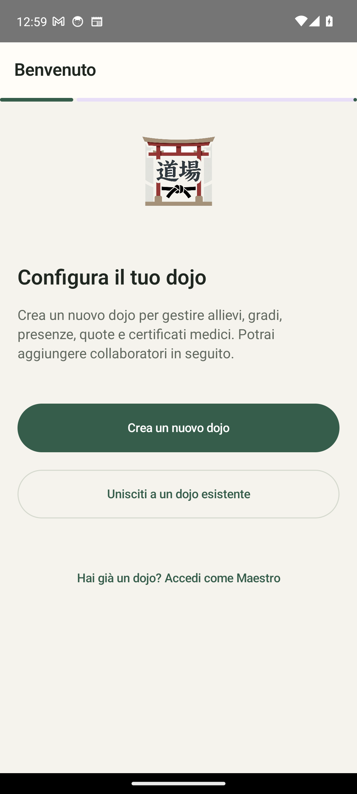
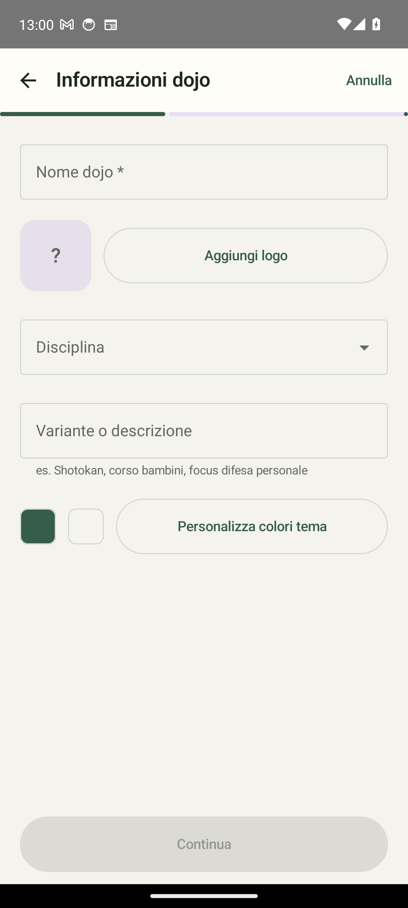
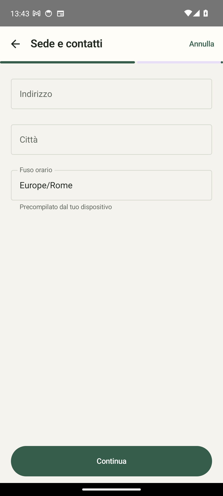

What it does
My Dojo is a native Android app (Kotlin / Jetpack Compose) for managing a martial arts dojo — Aikido, Judo, Karate and more. It keeps your members, their grades and attendance, membership fees, exam eligibility and a searchable technical glossary in one place. Local-first, with optional encrypted cloud sync for instructors and collaborators.
Features
Members & grades
Full member records (contacts, guardian for minors), kyu/dan belt catalog with colors, medical-certificate expiry and current-grade date.
Calendar & attendance
Monthly view and event list, regular lessons and extra events (seminars/stages), auto-generated from the weekly schedule, with an attendance register.
Payments
Monthly and yearly fees with automatic due-date calculation and reminders for outstanding fees.
Exam eligibility
An eligibility engine based on attendance (lessons + seminars) and time since the last grade, with admin-configurable thresholds and syllabus (plus video links).
Glossary
A dictionary of terms (term, kanji, meaning, optional link) with instant search and expandable cards.
Bilingual & secure
Full Italian/English UI. Hardware-backed Keystore, field-level AES-256-GCM encryption, and tenant isolation (RLS) for cloud sync.
Screenshots



Get started
- Open My Dojo and tap Create a new dojo (or join an existing one).
- Enter the dojo name, pick the discipline, optionally add a logo and theme colors.
- Add your members with their grades, contacts and medical-certificate dates.
- Set up the weekly schedule; lessons and attendance are generated for the calendar.
- Track fees and check exam eligibility as members train.
Privacy & security
- Local-first: all data belongs to the dojo administrator. No analytics, no ads, no tracking.
- Sensitive fields (emails, phones, guardian contacts, notes) are encrypted client-side with AES-256-GCM.
- Optional cloud sync (Supabase) over HTTPS/TLS with row-level security and signed JWT claims.
- Medical certificates: only the expiry date is tracked, never diagnoses or health records.